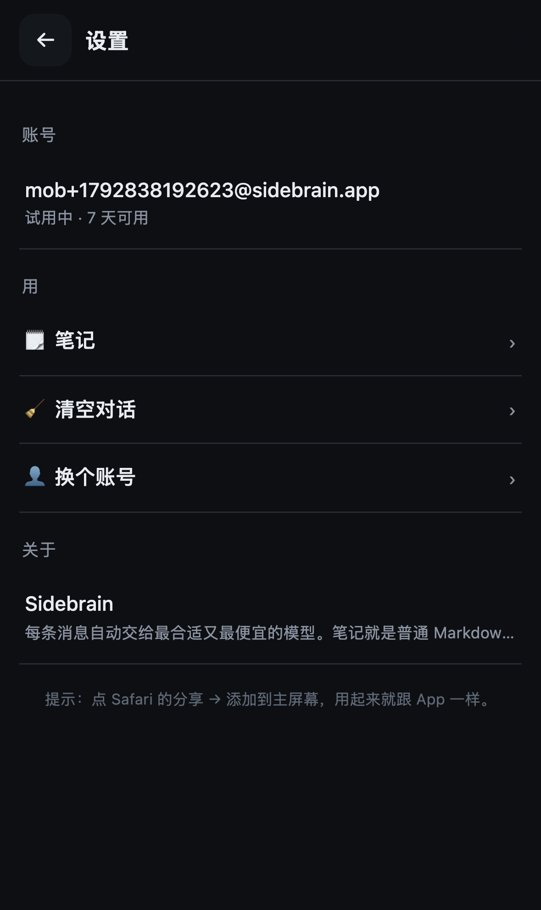

手机上怎么装 Sidebrain
两条路，先选一条就行。路线 A 三十秒能用，路线 B 才需要装一次扩展（换来「任何网页上都有小精灵」）。
路线 A · 当 App 用 30 秒 · 推荐先走这条
不装任何扩展，把它加到主屏幕，以后点图标就进，跟原生 App 一样全屏、暗色、带对话和笔记。
- 用 Safari 打开下面这个网址（别用微信/其他浏览器打开）： https://buzzmartglobal-art.github.io/sidebrain/m/
- 点底部中间的 分享 按钮（方框里一支向上箭头）
- 往下划，选 添加到主屏幕 → 右上角 添加
- 回桌面点那个新图标 → 输你的邮箱 → 就进去了（7 天免费，不用选模型）

进去以后是这样：底下打字、📎 传图传文件、🎤 说话
用的时候：📎 加图片或文件（截图、PDF、txt 都行）、🎤 直接说、顶栏 🗒 是笔记、右上 ⋯ 里全是设置。
路线 B · 每个网页都有小精灵 装一次 · 约 3 分钟
想要「在别的网站上看文章时，右下角就有个球可以直接问、可以划词存进笔记」，就需要苹果允许的「插座」——Userscripts（免费开源，不上传任何数据）。
- App Store 搜 Userscripts 装上（作者 quoid，图标是个 </>）
- 设置 → 应用 → Safari → 扩展 → Userscripts → 打开开关；下面的网站权限选 允许（找不到就在设置顶部搜索框直接搜 Userscripts）
- 回到桌面那个 Sidebrain 图标，点右上 ⋯ → 第一行 ✦ 一键常驻：每个网页都有它（新）
- 它会打开一页说明，按按钮 装到我的 Safari → 弹出「安装脚本」面板 → 点 Install
- 随便开个网页，右下角就有蓝紫药丸。点它问这一页，选中文字会冒「✦ 存进笔记」

⋯ 菜单第一行就是「一键常驻」，点进去跟着做
装好之后，任何网页右下角都有它
点了按钮只看到一堆代码、没弹「Install」？ 说明扩展刚打开还没吃上权限 —— 下拉刷新这一页，再点一次按钮。还是不行就走下面「备用」。
备用：不弹安装面板，直接粘脚本
在 ⋯ 菜单点 ⬇ 复制脚本（不装快捷指令时的备选），打开 Userscripts App → 右上 + → 把脚本粘进去 → 命名 Sidebrain → 存。回 Safari 随便开个网页就会生效。
装好了但网页上什么都没有？点这里自检
回到 ⋯ 菜单最下面点 自检（或手机版里点「装好了但没反应」），它会逐项告诉你：服务器通不通、连接码对不对、小精灵到底跑没跑起来、是不是扩展没开。红在哪一项就修哪一项。
常见卡点，就这三个
- 一定要用 Safari。微信、Chrome、夸克里打开的网页版加不了主屏幕，扩展也不生效。
- 扩展权限要选「允许」而不是「询问」。选询问的话每开一个网站都要手动点一次，等于没用。
- 旧脚本要删掉再装新的。Userscripts App 里如果还留着旧版 Sidebrain，先长按删掉，再走一遍路线 B。
Sidebrain · 手机和 Mac 用同一个邮箱就是同一个账号 · 笔记、截图都进同一个库